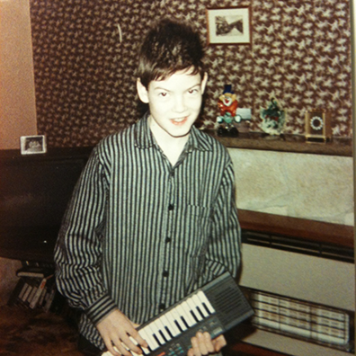

Today I was given some feedback in the form of a score, along with some written supporting feedback. This score sheet was based on other peoples expectation of me and how this held up against the actual outcome in their own view. The score was between 1-5, 1 exceeding expectation, 5 being something like shut the door on the way out.
When I first looked at the score, I had already said to myself that although quite fun, the score on its own and without the written feedback does little to actually help me. However, I wanted to think about the score a while before reading the feedback.
As I went through the scoring, I was reminded of my first school, of university, and of various other times in my life whereby a score had been used to assess me. Similar to these situations, I listened to my feelings, comparing them to my own expectations of myself, and as is often the case in these sorts of situations, internally debated how things measured up.
At first look I seemed score average, a few below, and one really low one. I thought about it for a while, and concluded this was probably quite fair. I respect the people I work with, and this seemed believable. These were perhaps all areas I am quite sensitive to, and am always trying to improve, and so could easily find a reason for the score as it was as I pondered back over the previous months leading up to this feedback. I was reasonably happy and looking forward to doing better next time.
Then a strange thing happened, whereby I suddenly realised what I had done. I had made a mistake in reading the scores. Despite being told and understanding the score system, I had somehow still managed to get it completely backwards. I had been looking at it all wrong, and actually was scoring average, some above, and one very good score. I was suddenly completely thrown.
After going through a process of justifying my score, the previous incorrect score, I was now trying to reevaluate it all over again, and it just seemed all wrong. I almost felt like I didn’t agree, and yet obviously slightly happier, I was still slightly confused.
What seems to have been a benefit of this mistake, is that I learned more about how I look at myself, about how I evaluate what is important to me, and how I wish to improve, than any written feedback would have provided if from someone else’s point of view. Obviously written feedback from others ‘is’ very important, but this only shows me what others think of me, and not what I think of myself. Never have I been really able to closely consider my own strengths and weaknesses from my perspective, and only was I able to come close through mistakingly reading the score and then having to reevaluate myself all over again.
This reminded me of how we think of our strengths and weaknesses. When I consider myself I say I am not working hard enough, not being organised, and not being disciplined. Otehrs are that my writing is not very good, I don’t read enough, and I am anti social. Although, as you might already know if you have met me, or can presume from supporting this blog, that these are pretty extreme views of myself. I can’t obviously start undoing these ideas of myself by saying I am good at writing, or focus, as I just said I don’t think I am. But I also am wondering, that although I was perhaps not good at these things many many years ago, and so decided to do something about it, I may not be like this anymore. The trouble here, is in an undoing of what we used to motivate our improvements of ourselves, creates a fear these improvements will somehow be undone. The moment I say I am now good at something I once was not, I will immediately judge my ability against my own expectations, expectations that how then increased. I move from perhaps what some might say is modesty, to being quite cocky.
When I think about this perspective of evaluation, it does ring slightly true in how I make music. I have often chose to work with less equipment, or specific or restrictive situations, to allow a lower expectation of an outcome. The outcome alternatively seems much greater than expected, and therefore I am able to respond better, or perhaps more comfortably, to any given situation or direction. The result is more a delivery of restrictions and process through limiting or manipulating expectation. If we expect it to be repetative, simple, abstract, we might therefore be able to get into it. If we expect a rugby ball to be round, we are always going to misunderstand the sport. Personally I don’t get rugby anyway… but thats another story.
This all reminds me of those classic words we have all probably heard in some form or another, uttered by particular types of soundman, going something like; “I think your cables are loose” for us to reply “err no, it’s meant to sound like that”.
Where is the split? Where do we put ourselves? As we might like to believe we are being ourselves, or not quite ourselves, or as I was told more recently, are in a funny mood, it does beg the question is not everything we do and how we do it not who we are? Does the very fact of us being the author and deliverer of us not make it always us?
We are in a time whereby social comprehension is under constant reevaluation. Not a time more than now does an emphasis on who we are, or what constitutes our own behaviour come under scrutiny. As some of us may pick an element of who we feel we are, or would like to be, and places this into the world, while others create pages of nobody, nobodies interacting with other-bodies? to serve to influence how they are portrayed, to create response and influence the lives of others they are to call ‘friends’.
The split, then, is not a spit at all, it is simply abstract. It shifts and twists, redefining itself over and over and over again. We are simply us, and it is them who try to define, it is them who make us who they think we are. Like a clocking in card, registering a moment of comprehension, of definition, before the shift begins all over again.
Our influence on others is intoxicating. The way we connect to others is life changing. Our time and our interaction should not be a passive and residue of existence, but an activity in itself that is in constant evaluation, under constant adjustment.
Our connection to others, our own personal division and the imposed division of ourselves, is a melting pot of mingled personalities, whereby finding a split is like finding the edge where glue meets glue.
(this upload is to be played along with Lucia’s found here)
Due to the fact my previous upload was posted over two weeks ago, you might correctly assume what todays post is about, what todays music upload might sound like…and you might be right on both counts.
Today has brought about the culmination of a building frustration. Little by little I have been subjected to what I can only explain in my somewhat silly but fatalistic way of looking at things, as many tests or challenges bringing me to remember what is important, and who is important.
Tests, might I add, that I have perhaps failed in, or at the very least, struggled my way through. Tests that have presented some ideals in life that I care little for, opinions that I disagree with, ways of working (or not working) that I have a slight irritation and dislike for, and all the while something slowly, but knowingly, has been disappearing into my past, slowly losing my grip on, a grip that is challenging me and my belief in it. Making music.
My time is not to be wasted. I cannot spend time in a place I am only situating myself in, due to society and its external factors that I am yet to master, and be in this place, and yet all the while be unable to do or act upon the very thing or reason I am in this place to begin with. I am not at a play school, and as much as I may enjoy the occasional playing myself, I am there for a purpose, a reason, and a reason that needs a delicate and essential understanding of the thing so many of us discard, that is of time.
My time is not to be wasted, our time is not to be wasted. Do we not have an ever disappearing amount of it? Do we not say, or perhaps we pretend? that we value time? that we make the most of it? ye perhaps we claim to be ‘oh so busy’ when in reality, when the truth comes down to it, when the shit is pushed aside and when perhaps our life is depending on it, we have not nearly enough respect for the time we have, and what we should do with it, and that we are actually wasting our own time, and the time of those nearest.
The question is perhaps, how do we respect the time of others around us? Do we assume that our time is ours alone? Or is it perhaps that our time is one that is shared with those nearest, and that through wasting our time, through having no respect for our own time, we are also reducing the time of those nearest. We are affectively killing those nearest, the death being one of lesser fulfilment that might have otherwise been, had they simply had the time, had their time.
My time, our time, and the time of those around us is not to be wasted.
Of all the thinking, preparing, setting up, testing, discussion and general faffing, sometimes just getting down to it and getting things done is the best thing to do.
Putting yourself in a good mood, is sometimes what makes things just seem so much easier, but recognising what it is that puts in you in that good mood it sometimes not so easy.

I found out recently, that I hadn’t actually properly listening to music like I did as a teenager, for what now seems like a long long time. Sure, I have sat and listened to things, closely, dissecting every single sound, analysing every thought and moment of audio as it hits my ears, but I haven’t really relaxed and enjoyed music for a long long time.
I guess perhaps due to creating it, time, where I am in my life, these could all be reason to be somewhat detached from music. But recently finding it again, finding what it can do emotionally, has been somewhat of a smack in the face.
It took the sounds of the 80’s, The Art of Noise, Depeche Mode, Yazoo, Erasure, Yellow, Kate Bush, YMO. It took the 90’s, Autechre, Aphex Twin, Beuamont Hannant, HIA, The Orb, Carl Craig , Tribe Called Quest, Pharcyde, and many many more. It took a reminder, a reminder through sound, a sound that put me in a mood I had almost forgotten about.
I feel alive again, I feel me again for the first time. This is the power of music, this is the power of sound creation, and I am so thrilled to have found it when I have, and been reminded of it once again.
Go listen to some music if you haven’t done so in a while, really listen. Sing along, tap your thigh…enjoy.
Recently I caught up with an old friend who I still haven’t seen in over 5 years. Still? Well, when I say caught up, what I actually mean is chatted on Skype.
Talking with him got me thinking about how we engage with each other these days, how things have changed, and how these changes may have left behind somethings that shouldn’t have been left. That somethings might need to be brought back.
When I say things need to be brought back, i’m not speaking about nostalgia here, I don’t want flared trousers coming back, although perhaps for some readers VHS would be far back in time enough, or maybe even thats too far, perhaps dial-up is sufficient. What I am talking about is something that can’t be bought on e-Bay, can’t be bought at Beyond Retro, and something that only exists with the generation who were there at the time. What I am talking about is how things were done and why things were done.
It is our generation that is responsible in teaching the next. We need to pass on what we know, how we did things, why we did them that way, paint a picture of our world, tell a story. But we don’t lecture the new generation, we learn from them too. Their generation is just as unique and special as ours, there is no better generation, no better period. Each has it’s own merits. The grass ‘is’ always greener.
Each generation has a reconfiguring of how things are, and each generation tries to understand the other from their perspective, but each fail. Their perspective is simply that, one of their time. As Wim Crouwell said “You are always a child of your time, and you cannot step out of that”. What we can do though, is help teach each other a context, and if ever there was a time for building a context it would be now.
Technology now is used in ways that we could never have imagined, and in the race to keep up with the new and latest way of doing something, we forget the importance of the certain ways things were done before. We know that times have changed but we sometimes easily believe that because of these changes, that the way of before is no longer useful, no longer applies, is no longer practiced. In actuality it is now that remembering how things were, why there were that way, and how they could be used today, that is the upmost importance.
We all remember how easy it was to get caught up in a trend, a way to dress, a way to speak, a way to behave. Well now those trends are more global and researchable than ever has been before. In the mass amount of easily accessible information, we skim, pick off the juicy parts, we get what we want and we just click away. But we are missing the point. We need the education, we need to be shown, we need to share, we need to communicate…really communicate. We need to understand that the ‘share’ button is a bunch of pixels, its actions defined somewhat by a computer. Sharing has been changed into a game of playground card trading, or maybe that is to far back for some, Pogs?, or maybe the latest mobile game?
Go and watch some episodes of Sesame Street and learn about how we share. Watch Herbie Hancock teaching children about sampling and sounds using a Fairlight, and when you have learnt something, don’t just simply copy-paste that link and leave it stranded like a hungry puppy, talk about it, share your knowledge, share your enthusiasm, share your ideas, teach each other, spend time with each other.
When your next reporting back to the doll office, and they ask you “Any work or changes?”…you say YES, I’ve got something I need to tell you, I’ve got something important that I want to share with you, and I need you to listen to me.
Something I have been wanting to write about for a little while now is something I like to call ‘finding the goldfish’, but first a little back story.
As some of you might already know I work as a front-end web developer, and am lucky enough to work with some amazingly talented and beautiful people. More important than that, I get to try stuff out with them. I’ve always believed that a creative person being told what to do is like tying an animal to a garden pole… its just plain cruel, but where I work, they let us run free with ideas, and run is exactly what we do.
A little while ago I was working with the graphic designer on creating some illustrations for particular businesses, and for some reason the idea of a goldfish seemed to fit that of accountants. After researching a little I remembered that Goldfish Credit Cards used the goldfish as part of their campaign. With this finding, combined with the ideas of stress relief, work desk objects and the general idea of purity with gold, it seemed like a solid but slightly unusual idea.
A few of us put it to others in the team but they couldn’t see the connection. A goldfish and accountants just seemed weird. We felt that although there were many more obvious options, I won’t mention any here as I am sure you can think of them yourself, it was this very fact that almost anyone could come up with them, that the idea of exploring the goldfish seemed all the more important.
What happened next was a gathering of people around one computer screen discussing the goldfish. To me and some of our team this was incredible. It wasn’t so much in the outcome of the illustration that we learned, but in choosing an unexpected and challenging option or route. We created excitement, discussion and energy in the group. We got passionate.
Eventually we did all agree that another illustration would be best, but now our team are trying to find where this goldfish can be used and how. We already have some fun ideas for it. What started and could as easily finished as something obvious, turned into something much greater, exciting and unexpected.
Now when we brainstorm in our team, the idea of ‘finding the goldfish’ is very much a key strategy. This method might sound familiar and much like thinking outside the box, but where as thinking outside the box is often an over used collection of words thrown around, ‘find the goldfish’ means something more specific to us, it has a story and experience that we all shared attached. This story, this experience is the key.
In all my creative work, I have always tried to find the goldfish, and it is equally satisfying when I find the goldfish in other peoples work too. It’s hard to look for and often you find it by mistake, but you won’t find it at all unless you know it exists, and that goldfish does exist for everyone.
Whatever your creating right now, be it music, sound installation, graphics, web design or writing, whatever it might be, seek out and find that goldfish, it desperately needs feeding.
We often have a fear of change. It can be something as small as trying a new food or as strange as actually doing what you wish you could. Stepping outside of the norm, making or doing something different. Doing something that you think isn’t you, as if it isn’t you who decides who you are. Weird isn’t it.
We all experience fear in some shape or form, and often this fear can creep up on us without us really wanting to acknowledge it. Until it scares us that is. This fear needs to be faced, it needs to be tamed but ultimately it needs to be respected. Fear is a slippery customer.
I believe one fear left not faced will feed all the other fears until we cower away dodging fear until it builds and builds and we can’t move or do anything in fear of… you get the picture.
Today I thought I conquered a fear, but I know deep down inside this is a lie. I didn’t beat fear, I only cheated it instead. I tricked myself into believing I faced the fear and beat it, knocking it out of the ring. Really I just knocked it back a bit with a sneaky jab below the belt. It was probably unfair and wrong, but I guess the fear doesn’t play by the rules either.
But I am ready for the second round, and I am ready for facing that fear again. Am I scared? You bet I am, I mean it wouldn’t be called fear if I wasn’t. And I think this is the trick, its not a case of removing fear, its about getting used to being scared. The next time fear shows its ugly face, scared is partnering up with brave while me and fear can go at it once more.
If we can understand fear to be a familiar foe, then we can always push against it to create better, be more extreme, push more, change things, and inspire others to do the same. We will begin to resist the temptation to navigate around fear, finding that safe route, finding that familiar creative mode, but look for another way, the way of looking at fear straight on.
If a question arrives at your feet in the guise of fear, daring you to answer? Then answer.